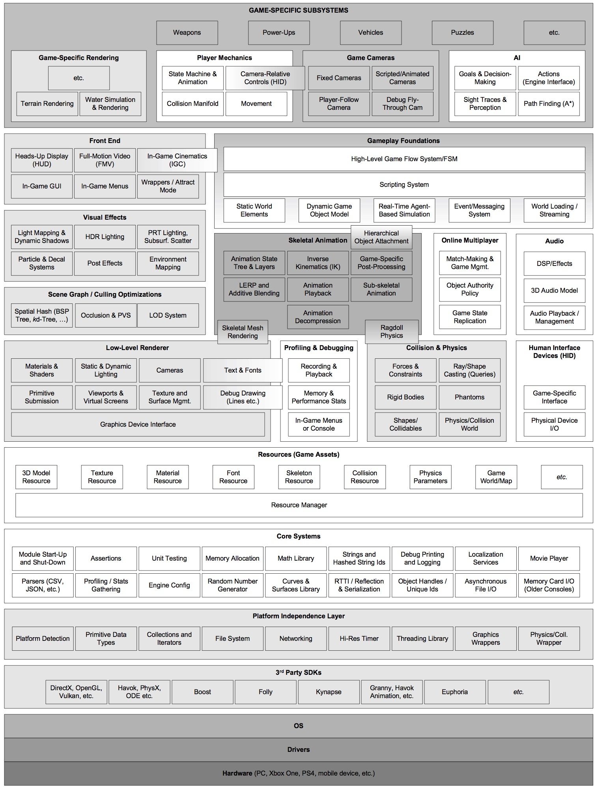

Behind the graphics and functionalities of our R-type product we find a game engine called GH Engine.
What is ECS ? ⚙️
The ECS (Entity Component System) is a design approach for managing game elements in an organized way. It separates data (such as position and velocity) from behaviors (such as movement and rendering). This allows for easier development in smaller pieces, better management of characters and objects, and the creation of interactions between them. In summary, it's a modular approach useful in video games and other fields, divided into three parts: entities, components, and systems.
Entities : Entities are objects or elements of the game. For example, in a game, a character, an enemy, an object, or a projectile can be entities.
Components : Components are the features or data that describe the entities. For instance, a component could represent the position, velocity, color, or other attributes of an entity.
Systems: Systems are pieces of code that perform specific actions on entities that have certain components. For example, a movement system can update the position of entities with a velocity component.

Image illustrating an ECS
How did we design our ECS ? 🛠️
Already The engine was developed in C++. The entities here have the name Entity. To manage the components, we used a component register called parameters. The parameter is capable of linking an entity to a component, of adding property parameters to settings. It is on the map that the entities appear.
What are the properties of our ECS ? 🔑
Our ECS contains properties such as the collider which allows you to manage collisions between different elements. In addition, it contains the transform property which allows you to manage the movement. It contains the position of the entities.
Integration of property into the ECS. 📜
This is done in such a way that only systems can integrate new properties into the scene. This is to avoid parasitic properties (a property that is not affected and controlled by any system).
The entire ECS is focused on the stage. The scene is a class that contains the list of integers that are currently being used. It stores the list of systems that are running. It allows you to create entities and link components to them.
It contains the component table.